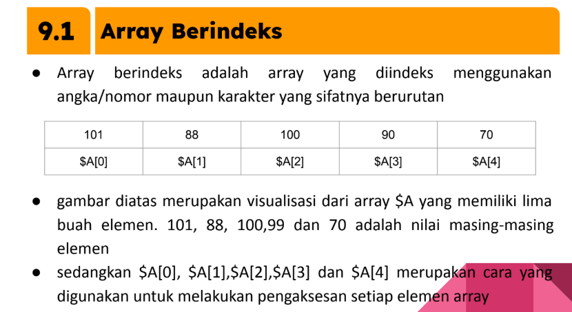
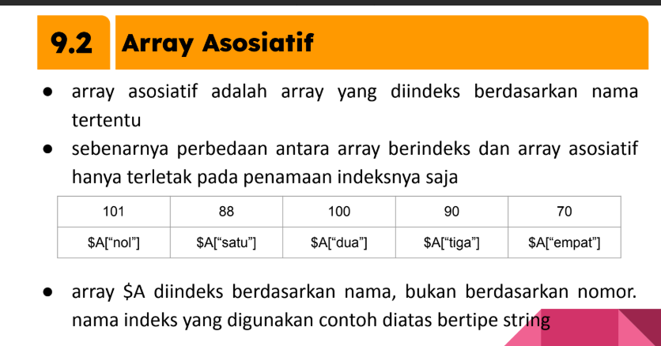

Web Materials
HTML
HTML (Hyper Text Markup Language) adalah bahasa pemrograman yang digunakan untuk membuat struktur dasar halaman web. HTML berfungsi untuk menandai elemen-elemen berbeda dalam sebuah halaman web.
-
HTML dikembangkan oleh Tim Berners-Lee, seorang ilmuwan dari European Organization for Nuclear Research (CERN) pada tahun 1989
-
HTML merupakan standar yang digunakan secara luas untuk menampilkan halaman web
-
HTML saat ini merupakan standar Internet yang didefinisikan dan dikendalikan penggunaannya oleh World Wide Web Consortium (W3C)
CSS
Kepanjangan CSS adalah Cascading Style Sheet. CSS digunakan untuk memberikan warna, style, ukuran, dan juga digunakan untuk mengatur posisi pada elemen-elemen di halaman website, sehingga membuat halaman website tampak lebih menarik saat dilihat.
adapun jenis-jenis css:
-
INLINE CSS => h1 style="font-size: 30px; color: #0c4ff5"> Hello World!
-
INTERNAL CSS => style body{color: blue}; style
-
EXTERNAL CSS => menggunakan link rel="stylesheet" href="arahkan ke file css"
Javascript
JavaScript adalah bahasa pemrograman yang digunakan untuk membuat halaman web interaktif. JavaScript merupakan bagian penting dari teknologi web modern, bersama dengan HTML dan CSS.
Untuk menuliskan kata "Hello world" pada JavaScript code caranya kaya gini:
-
function greetMe(yourName) { alert("Hello " + yourName); }greetMe("World");
Variabel:
-
let y = 13. / var x = 42.
PHP
singkatan dari "Hypertext Preprocessor", sebuah bahasa pemrograman script server-side yang populer digunakan untuk membangun aplikasi web dinamis dan interaktif.
PHP digunakan untuk memproses data, mengakses database, dan menghasilkan konten dinamis dalam halaman web.
Deklarasi Variabel:
-
$x = 5;
$y = "John";
Untuk Menampilkan Variabel:
echo "$x";
Tipe Data:
- String
- Integer
- Float (floating point numbers - also called double)
- Boolean
- Array
$x = "John";
echo "Hello $x";
$a = 1234;
echo "$a";
$a = -3.578;
echo "$a";
$benar = true;
$salah = false;
$cars = array("Volvo", "BMW", "Toyota");
var_dump($cars);
Mengatur Alur Program
Blok pemilihan yang terdapat pada suatu program berguna untuk menentukan statement mana yang akan dieksekusi didasarkan pada kondisi-kondisi tertentu yang didefinisikan jika kondisi terpenuhi (bernilai true) maka statemen yang terdapat di dalam blok bersangkutan akan di eksekusi. sebaliknya jika tidak terpenuhi (bernilai false) maka statement tersebut akan diabaikan oleh program didalam PHP pemilihan statemen dapat dilakukan dengan menggunakan statemen if dan switch
1. If Else Statement
- Statemen if memiliki bentuk umum penggunaan seperti berikut:
- Jika statemen yang akan dieksekusi berjumlah lebih dari satu, maka bentuk umumnya menjadi :
- Statemen if juga dapat digunakan untuk memeriksa kondisi yang jumlahnya lebih dari dua
- caranya dengan menggunakan klausa elseif
if (kondisi) statement
if (kondisi) { Statemen1; Statemen2; ..... }
if (kondisi1) { statemen1; }elseif (kondisi2) { statemen2;
}elseif(kondisi3){ statemen3; }else{ statemen4; }
2. Switch Case
- Statemen switch biasanya digunakan untuk menggantikan struktur if yang memiliki terlalu banyak kondisi
- bentuk umum penggunaan statement switch sbb :
switch (ekpresi) { case nilaikonstanta1: statemen1;break; case
nilai konstanta2: statemen2;break; .... default: statemen
alternatif; }
Looping
Dalam mengembangkan aplikasi web, sering dijumpai kasus-kasus yang menuntuk kita untuk melakukan pengulangan terhadap statemen-statemen tertentu.
PHP menyediakan beberapa bentuk blok pengulangan, yaitu while,do-while, for, foreach
1. While Statement
- Statemen while melakukan pemeriksaan kondisi di awal blok
- dengan demikian jika ekpresi bernilai false, maka badan pengulangan akan diabaikan
while(ekpresi)
statemen;
//atau dapat juga ditulis
while(ekspresi){
statemen; }>
2. Do While
- pada struktur pengulangan do-while kondisi akan akan diperiksa dibagian akhir
- hal ini mengakibatkan statemen dalam badan pengulangan minimal akan dieksekusi satu kali, meskipun kondisi yang didefinisikan ternyata tidak terpenuhi
do statemen;
while(ekpresi);
//atau dapat ditulis
do{
statemen;
}while(ekpresi);
3.For Loop
- statemen for dapat dikatakan sebagai bentuk pengulangan paling sederhana
for (inisialisasi;ekspresi;increment++/--decrement)
statemen;
//atau dapat ditulis
for(inisialisasi; ekspresi;increment/decrement)
{ statemen; }
4. Foreach
- stateman foreach digunakan untuk melakukan pengulangan pada saat mengeksekusi elemen-elemen dalam suatu array
$pegawai = array(‘manajer’ => ‘cecep’,
‘dirut’ => ‘asep’,
‘umum’ => ‘dudu’
‘tenisi’ =>’jaja’);
foreach($pegawai as $nama){ br echo”hallo,$nama”; }
Array
array adalah suatu koleksi nilai yang saling berkaitan
array fungsinya sama seperti variabel hanya saja nilai yang ditampung di dalamnya bisa lebih banyak tidak hanya satu
array tersusun atas elemen-elemen, setiap elemen memiliki kunci (key) dan nilai (value)
- 
- 
$suku = array(“Sunda”,”Jawa”,”Batak”,”Minang”);
$pegawai = array(“Dirut” =>”cecep”,
“Manager” =>”asep”,
“Marketing”=>”Jaja”);